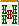
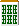

对子（1）(対子(トイツ) １)
（1）雀头
（2）面子候补（之后再引一张相同牌时会组成刻子）
（3）七对子的构成要素
关注这3个作用来考虑对子。
本页是关于（1）的雀头。
雀头很容易形成
雀头在包含国士无双的所有和牌形中都是必要的。 雀头不像面子那样是打牌人有意识地做的东西， 请认为是通过重复摸打（摸到后打牌）自然而然形成的。
【例1】


例1是没有雀头的起手牌，但在这里为了做雀头而去考虑重合的牌是很荒谬的。
起手牌中13种牌的任何一种重合都能形成对子。 每一巡有13种进张意味着，平均2.6巡就能形成对子。
当然  等引来了的话，用作雀头的概率也极低，但考虑到这一点也能理解没有必要担心没有雀头。
即使最终变成了没有雀头的单骑听牌，也因为变化丰富而不必担心。
等引来了的话，用作雀头的概率也极低，但考虑到这一点也能理解没有必要担心没有雀头。
即使最终变成了没有雀头的单骑听牌，也因为变化丰富而不必担心。
【例2】


 摸
摸
例2会瞬间变成只有3枚的单骑听牌，但如果


 引来的话
引来的话
就可以大幅改善听牌。
立直容易出的字牌听牌也是一个选择。
从复合形中制作雀头
虽然写了雀头容易形成，但"有意识地重合牌"就很困难了。
例如，想用 来制作雀头的话，
需要再摸一张只剩3张的 。
这基本可以认为几乎不可能期待。
因此，有利用完成牌组的方法。
【例1】

 →
→  摸 →
摸 → 


这种形式的话 
 引牌就能做雀头。
引牌就能做雀头。
进张是6张，是单张牌的2倍。
【例2】

 →
→  摸 →
摸 → 


例2是

无论引哪一张都可以，进张同样是6张。【例3】

 →
→  摸 →
摸 → 


利用暗刻的复合形的话，更能容易地制作雀头。
这样是  的7张进张。 引来形成的
的7张进张。 引来形成的

也同样。【例4】

 →
→  摸 →
摸 → 


例4是  ￣ ￣
￣ ￣  的11张进张。
的11张进张。
像这样利用完成牌组的话，可以高效地制作雀头。
暗刻与雀头
暗刻去掉一张就能制作雀头。
【例5】


 摸
摸
例5不会变成 或 的单骑听牌。
切掉  或 ，取进张8张的
或 ，取进张8张的  听牌。
听牌。
面子优先法则
虽然写了从暗刻切一张就能制作雀头，但那样制作雀头基本上只在听牌时。
【例6】


 摸
摸
例6是没有雀头的两向听，但在这里切 是恶手。
比面子，雀头要容易得多。
如果雀头决定为 的话，之后还需要做3个面子。
与其如此，不如朝着做2个面子和雀头要容易和牌得多。
这手牌是切 的一手。
【例7】


 摸
摸
例7也是没有雀头的形式，但如果丢弃 决定头的话，会绕远路到听牌。
切 决定索子为顺子是正解。
像这样，比雀头优先面子是做手牌的基本，但也有例外。
【例8】


 摸
摸
这种形式的平和确定一向听的话，丢弃 
 确定雀头也没关系。即使到听牌的进张减少，听牌时的听牌质量，以及得到平和这一手役1番，这样更有利。
确定雀头也没关系。即使到听牌的进张减少，听牌时的听牌质量，以及得到平和这一手役1番，这样更有利。
理论·总结
比起容易制作的雀头，优先制作到完成需要时间的面子的手牌方法，基本上离和牌更近。